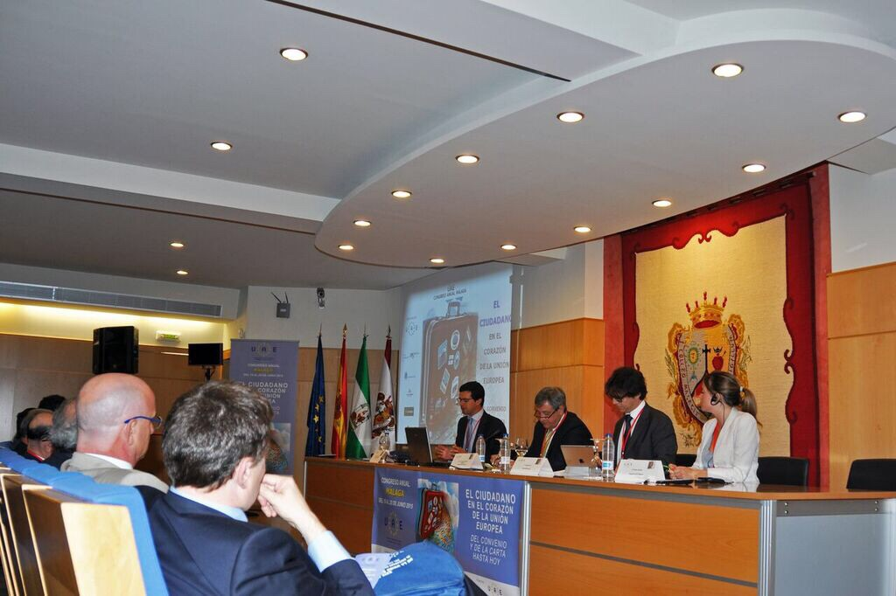

2015 - Jun 18-20
Congress European Union Lawyers in Malaga
- In Malaga the annual congress of the Union of European Lawyers (UAE).See below the program flyer.
- Attorney Gabriele Donà, Vice President of the UAE, will speak Friday, June 19 on "The European Citizen on a Personal Level." 
2015 - May 29
Conference May 29, 2015 in Creazzo (VI)
- The center of criminal tax law hosts the conference "TAX ASSESSMENT AND CRIME IN THE DAILY PRACTICE".
- Attorney Gabriele Donà speaks on "The protection of the taxpayer before the Court of Justice of the European Union - Case studies".
- Attorney Wilma Viscardini lectures on "More Community principles for the protection of the taxpayer invocable before a national court - Case studies".
- Here the poster of the conference. Conference Program of Creazzo
2014 - Nov.
Attorney Gabriele Donà elected Vice President of the European Lawyers Union
- At the General Assembly of the Union of European Lawyers (UAE) held 29 November 2014 in Krakow the new "Bureau" of the Association was elected.
- Within the "Bureau", attorney Gabriele Donà has been appointed as Vice President of the UAE.
- The prestigious mandate - as per its statutes - will last two years and may be renewed if necessary.
2014 - September
Wilma Viscardini awarded with the Golden Toga
- The Council of the Bar Association of Padua honors attorney Wilma Viscardini with the "Golden Toga" in recognition of her 50+ years of professional career.